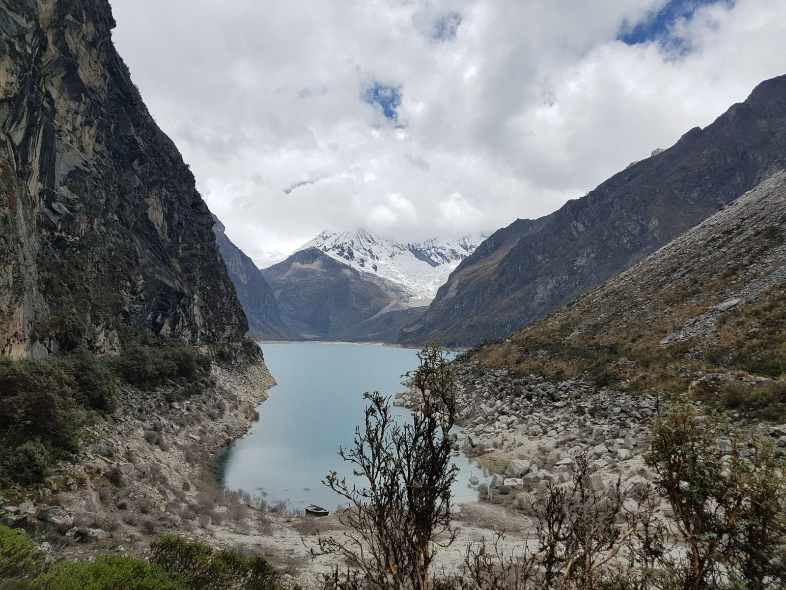
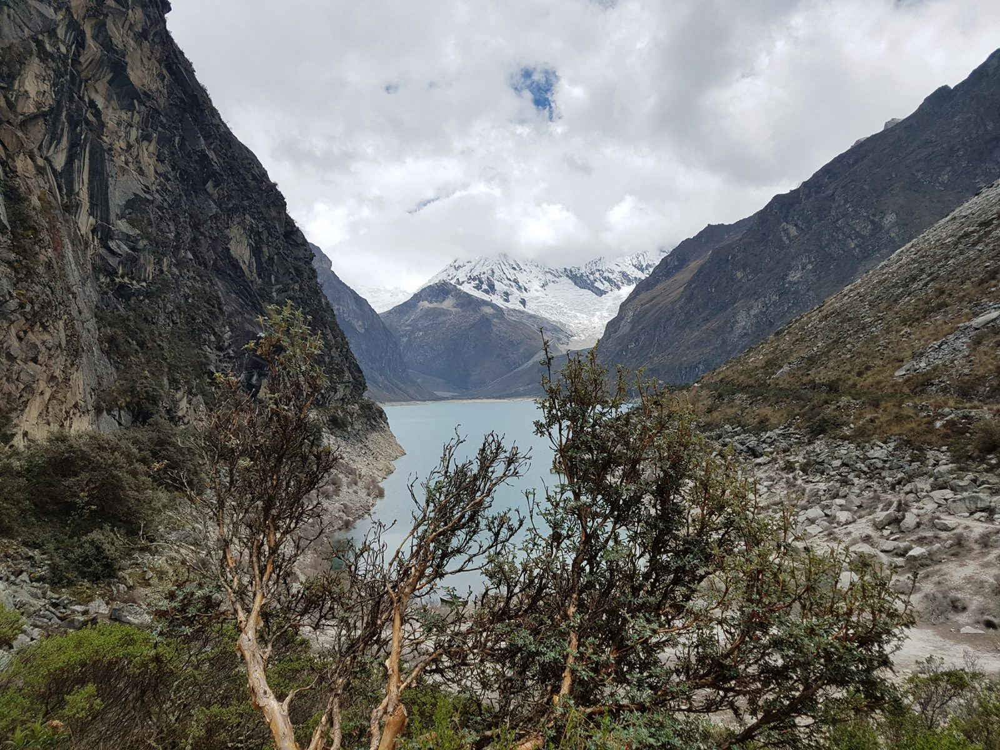
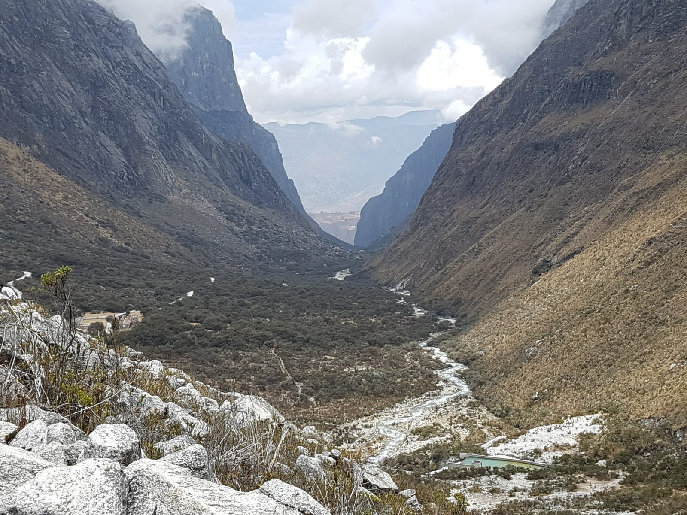
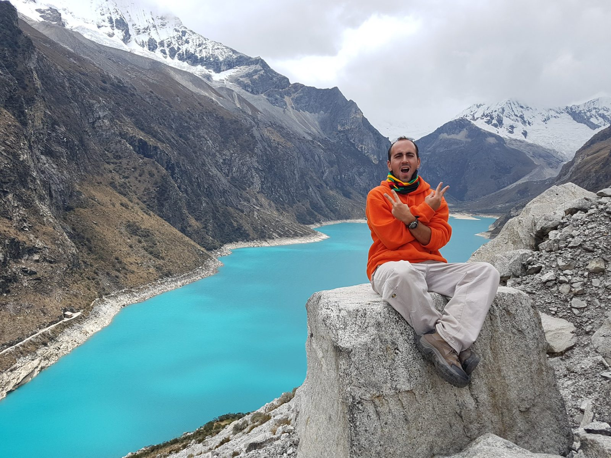
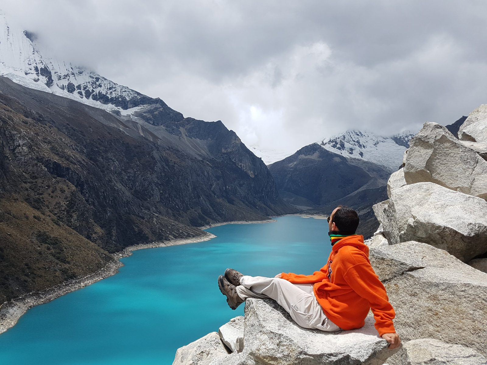
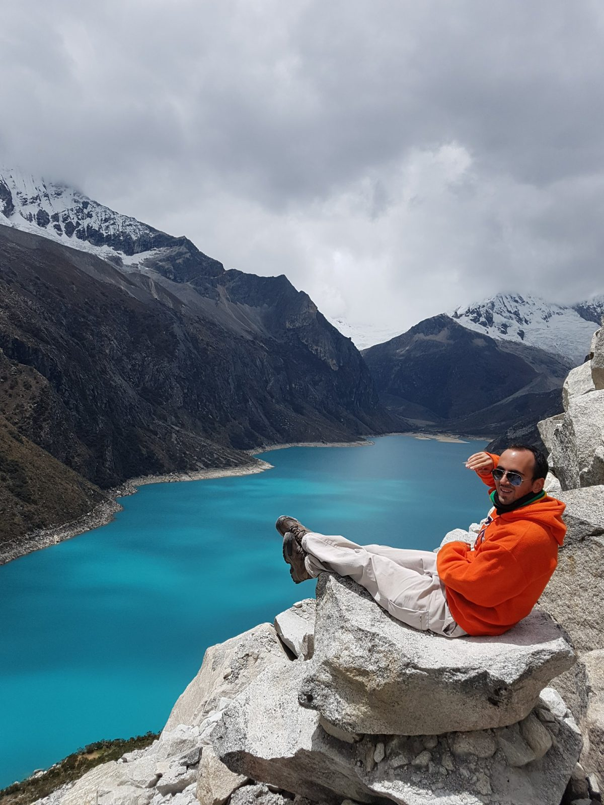

South America · Peru · Huaraz · Laguna Parón
Laguna Parón, September 2017
I visited in 2017, when this was an ordinary day trip. Since 2023 the Huascarán National Park authority has restricted tourist visits to the Parón ravine, and as of the latest reports I found, the restriction was still in place.
- July 2023: the park authority (SERNANP) and the glacier institute INAIGEM announced a closure, after INAIGEM rated the danger around the lake as "very high" from an avalanche or falling rock that could cause an overflow (Andina, July 21, 2023).
- June 2024: the consumer authority Indecopi fined two Huaraz agencies for offering Parón visits despite the warning (Andina, June 14, 2024).
- July 10, 2026: the park chief said entry remains restricted, that people still reach the lake anyway, and that there is no permanent control post there (Ancash Noticias).
- August 30, 2026: El Comercio reported a level of 4,189.69 m, above the 4,185 m reference maximum, and cracks in the dike according to an unnamed local worker. The same article says the local community president disputes that there is any danger (El Comercio).
- October 12, 2026: the Environment Minister called on the authorities to prevent the risk of a flood. INAIGEM estimates that more than 22,000 people in Caraz could be affected (Chimbote en Línea). The reports I read do not say whether the visiting rules changed.
So please do not plan a trip from this page. If an agency sells you a Parón tour as if nothing has changed, treat that as a warning sign, and check the current status with the Huascarán National Park authority first.
The day
I went on a day trip from Huaraz with an agency, two days after the Pastoruri glacier. I did not keep notes on the times or the route, so I will not invent them. What I do have is a set of photos and a short video, taken between about 11:40 and 12:35 by my camera's clock, in three places.
The first viewpoint, around 11:40


Looking back down the valley, around 11:53

The rock above the lake, 12:35 to 12:51
The best views came last, from a pile of granite blocks high above the water. Google Photos places these pictures at Mirador Laguna Parón. Under a brighter sky, the lake looked far more turquoise than it did an hour earlier.



About the lake
Parón is a glacial lake in Huascarán National Park, about 32 km east of Caraz. It is roughly 3.7 km long and 700 m wide on average, and it sits among peaks that reach about 6,400 m. Sources disagree on the surface altitude: Wikipedia gives 4,155 m today and 4,185 m originally, and travel guides usually say about 4,200 m. The lake's water was used for the Cañón del Pato hydroelectric scheme until July 29, 2008, and its level is regulated through a tunnel and an underwater gate (Wikipedia, Lake Parón).
That regulation is exactly what the 2026 reports are about: who operates and maintains the works that keep the lake below its maximum level.
What I would do differently
In 2017 I did what most visitors did: I booked a day trip with an agency and it was straightforward. Today I would first find out whether the visit is allowed at all, from the park authority and not from the agency selling it. If it is closed, I would use the day for something that is open. Pastoruri, which I visited two days earlier, received more than 5,000 people over the 2025 Fiestas Patrias weekend, according to Andina (August 8, 2025).
Previous: Pastoruri Glacier. Up: Huaraz. Next: Huacachina.